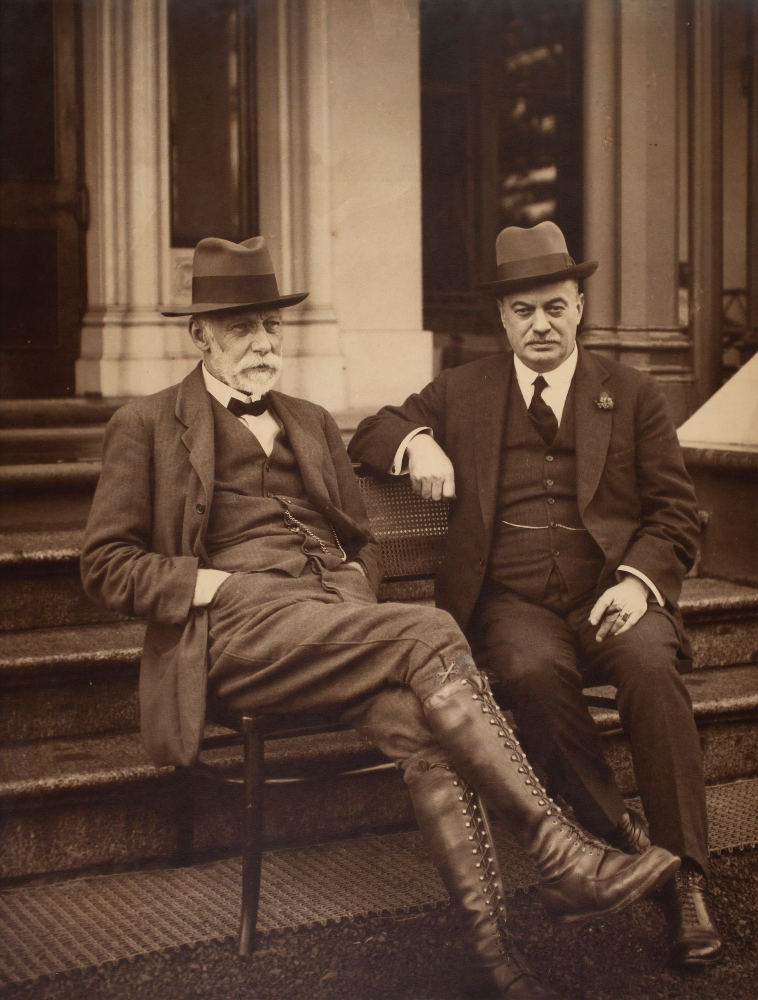

La nostra storia:
- Il ristorante viene fondato a Velletri nel 1906 dai brillanti fratelli Giovanni e Alberto Rossi con il nome de "Il Piatto D'Oro", presentandosi fin dall'inizio come un locale innovativo e all'avanguardia
- Il Piatto D'Oro sopravvive alla guerra del 15-18 nonostante svariate difficoltà economiche. Durante gli anni venti e gli anni trenta la situazione economica migliora. All'alba del secondo conflitto mondiale, però, i fratelli Rossi sono costretti a chiudere il locale a causa della pesante povertà in cui versava la cittadina.
- Nel 1954 Mario, il figlio di Alberto, riapre il locale insieme al padre, l'influenza dei soldati americani di stanza nelle vicinanze si fa sentire, e la cucina del Piatto D'Oro inizia a presentare influenze internazionali.
- Nel 1993 Roberto, il nipote di Alberto, prende in gestione il locale e ne cambia il nome in "Golden Plate", nome che rimane ancora oggi
- Arriviamo quindi al 2017, anno in cui Roberto passa la gestione del locale a sua figlia Sofia, che è, ancora oggi, la responsabile della cucina. A lei si devono le innovazioni dei piatti e l'impostazione fusion della cucina del Golden Plate